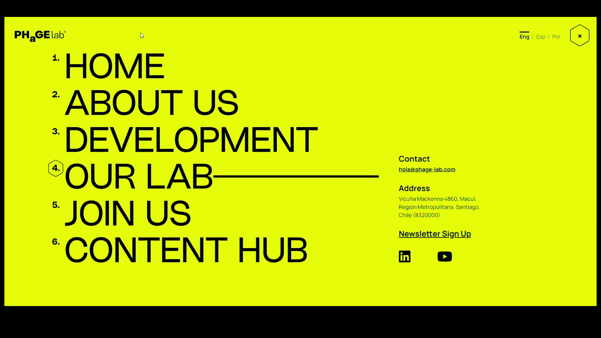
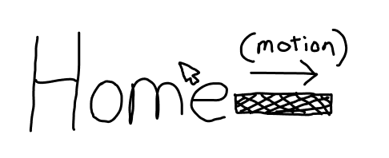
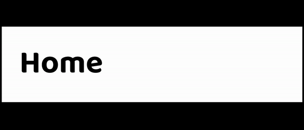
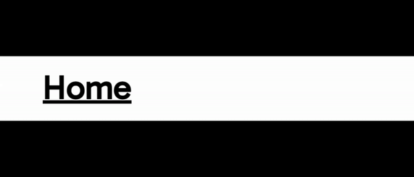
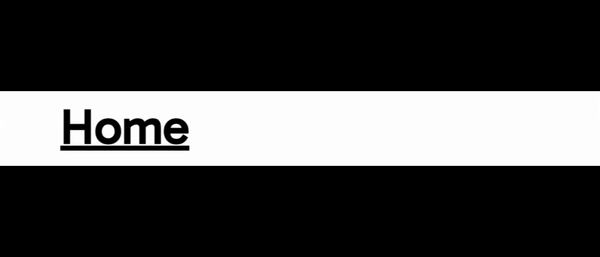
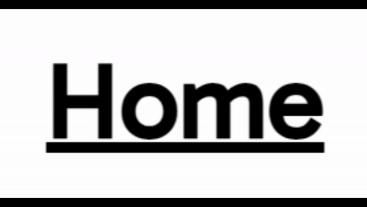

IDM 241 Case Study
Overview
Executive Summary
As a project for a class based around building and understanding microinteractions, I was tasked with identifying a pre-existing microinteraction, recreating it using HTML and CSS, improving upon it, identifying its triggers, rules, feedback, and loops and modes, and then putting it on a static HTML website. I chose a microinteraction featured navigation items that when hovered over, triggered an animation to play of a line extending to the right. I sought to solve several problems I identified with the microinteraction by creating several new iterations of it.
I prototyped an initial version of this microinteraction in Figma to outline the basic animation. Then, I moved into the devilment process, discovering that I could recreate the line animation using absolute positioning, hover states, and transitions within CSS. I then added a click animation as well as a fade in on page load and cursor changes. My final iteration improved upon the original Microinteraction by offering more feedback, not glitching, and fading in on page load. I was able to address each of the initial problems I identified and create a final product that delivered on each of my objectives.
Background
This project was created as a final assignment for IDM 241, a class centered around building effective microinteractions from both a UX and a coding perspective. My objective was to choose an existing microinteraction, dissect how it was coded, identify possible areas of improvement, and create a new version with those improvements implemented.
The jumping off point for this project was the navigation section on the website of a company called PhageLab. Hovering over any of the navigation items triggers a line to extend outward to the right. This is a visually unique way to give the user feedback, so I selected this microinteraction to improve.
The timeline of this project was 12 weeks, including weekly deadlines that split the project up into pieces. For example, I created an Alpha and Beta build in advance before creating the final iteration. There were no specific budgetary restrictions, but the project was created using mostly free tools such as Visual Studio Code and Figma. A hosting subscription to Dreamhost was the only expenditure.
The purpose of this project was to improve my understanding of microinteractions by improving an existing one. Analyzing the code and UX design decisions of the existing microinteractions and then improving both aspects served as a vehicle for me to better understand how microinteractions can contribute to the overall experience of a digital product.
The Problem
I identified three main problems with PhageLab’s microinteraction.
- There is no feedback when the user clicks a nav item other than linking to another page.
- Occasionally, the line next to a nav item will not animate back, but rather stay extended indefinitely
- There is no fade in when the nav items appear onscreen.
These problems require both UX brainstorming as well as attention to the functionality of the code.
Goals and Objectives
The goal of this project was to recreate the functionality of this microinteraction using HTML and CSS while solving the three aforementioned problems. Specifically, I aimed to create a static page that featured a functional nav item with the line extend animation from PhageLab. I broke this objective into smaller goals.
- Determine how the original microinteraction’s animation works in terms of CSS
- Identify the rules, triggers, feedback, loops and modes in order to understand the UX side of the microinteraction
- Create a working nav item on a static HTML page.
Process and Insight
Sketches
These initial sketches show the functionality of the animation. In this sketch, I included a list of nav items with a line extending outward from one of them to represent the visual feedback of a user hovering over an item
Prototyping
I used Figma to create a basic prototype for me to base my later iterations on. In this basic prototype, the home object responds to the user hovering with a line extending to the right. This is a fairly primitive version of the animation as the line appears suddenly with no transition.
As I moved into later stages of prototyping, I used HTML and CSS to create a functional version of the microinteraction. By using CSS, I was able to add a smooth transition to the line appearing, moving gradually to the right. This version looked much more organic, as opposed to the jarring motion of the last iteration.
In the next functional iteration, I focused on increasing feedback. The original microintaction did not give the user any feedback after clicking the link. Many button change color and/or size briefly after being clicked to denote that the user has successful clicked them, thus affirming to the user that they have successfully clicked the button. Here, I added a size and color change on click in order to achieve this.
I also added a fade in effect to add visual interest to the navigation along with cursor changes. Users expect the cursor to change to a pointer when hovering over a clickable item, so I adjusted my code accordingly.
Code / Dev
In order to achieve the line extension effect, I have an h1 element called “Navitem”, which says “Home”. That h1 has a child which is a div called “line”. The initial width of the line div is set to 0, so it is invisible at first. Then, I have a CSS selector that uses “.Navitem:hover .line” in order to style the line div specifically when the user hovers over the Navitem. This selector gives the line 25vw, making it visible. Additionally, the line’s position is set to absolute, and it has “left: 100%”. This ensures that the line will always appear to the right of the Navitem. There is also a transition style of 0.3 seconds for “width” and “left”. Thus, the line appears to extend from left to right over the course of 0.3 seconds.
For the button press effect, I used an active state in my css. the selector “.Navitem:active” lets me change its size and color on click. Initially, I ran into the issue that this only affected the nav item and not the line, but the selector “.Navitem:active .line” allowed me to select the line as well. I also used the line of CSS “cursor: pointer” so that the cursor would change states on hover.
The Solution
This is a link to my final project page. Below is the functional microinteraction.
link
The nav object fades in on page load, the line extends on hover, and it reacts to clicks by shrinking and changing color. This is an improvement over the original version as the fade in and click animations are new. Additionally, the original version of the microinteraction occasionally glitches and keeps the line permanently extended even when the user is not hovering. My version only extends when hovered over.
Overall, my microinteraction features 5 triggers: hovering over the nav item, hovering off the nav item, mouse down on the nav item, mouse up on the nav item, and page load.
It has 5 rules. On hover, the cursor turns into a pointer and the line extends to the right by 25 viewport width. On hover off, the pointer turns back into normal cursor, line retracts to the left, disappearing. On mouse down, the text and line turn grey and become 5% smaller. On mouse up, the text and line return to their original size and color. Finally, on page load, the nav item fades from 0 opacity to 1 opacity over 1.5 seconds. The feedback is the same as the rules in the case of this microinteraction.
There are no loops or modes in my microinteraction.
The Results
Overall, I successfully addressed the problems I set out to solve with this project. My goals were as follows:
- Determine how the original microinteraction’s animation works in terms of CSS
- Identify the rules, triggers, feedback, and loops and modes in order to understand the UX side of the microinteraction
- Create a working nav item on a static HTML page.
I did successfully dissect the code of the original microinteraction, using hover states, absolute positioning, and transitions in order to create the line animation. I did identify the rules, triggers, feedback, and loops and modes as I outlined in the previous section. Finally, as I previously linked to, I created a working version of the nav item on a static HTML page.
Additionally, I solved the three problems I identified with the originals microinteraction:
- There is no feedback when the user clicks a nav item other than linking to another page.
- Occasionally, the line next to a nav item will not animate back, but rather stay extended indefinitely
- There is no fade in when the nav items appear onscreen.
I added feedback via a click animation, made sure that my CSS would not allow for the line to get stuck indefinitely, and added a fade in for the microinteraction.
I learned several lessons from this process.
First, I learned that one can create animations in CSS using unexpected means. At first, I was stumped about how to recreate the original line animation. I thought I would have to use a gif next to the text, or some other clunky way of achieving the effect. Only by exploring transition effects and absolute positioning was I able to simulate the effect of a line moving. Although this may seem like an unconventional way to simulate this effect, it provided the desired outcome.
Second, I learned that there is still much unexplored design space for very mundane elements. I mean this in the sense that nav menus are very common across websites and apps, and they generally fit within a simple template. Usually, nav menus are just lists of links to various pages of the website. Phagelab’s navigation is unique, I have never encountered a nav menu that uses that type of line extension to give the user feedback that they are hovering. This animation creates a sense of intrigue and delight that enhances the user experience.
Finally, I learned that it’s easy to take simple UX principles for granted. For example, users usually do not think actively about button click animations. They exist subtly, giving feedback without drawing much attention to themselves. But when there is no button animation, the lack of its presence becomes noticeable. Thus, it is important to pay detailed attention as a UX designer because although not every UX decision will be actively acknowledged by the user, lack of good UX will stick out like a sore thumb.
Overall, I am pleased that I met all of my initial goals for this project and I feel as though it was an enriching experience.